Convolutional Sparse Coding for Noise Attenuation of Seismic Data
Zhaolun Liu
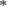
KAUST, zhaolun.liu@kaust.edu.sa
|
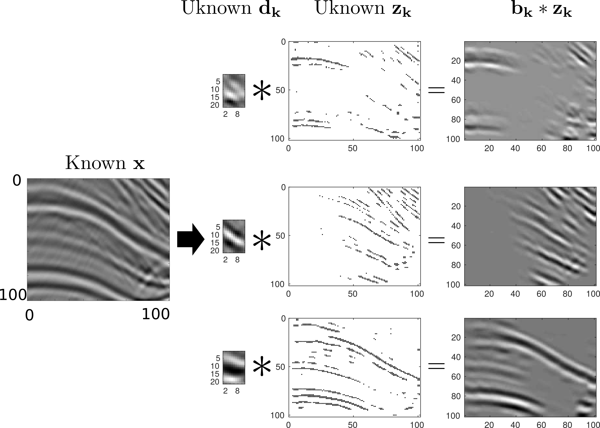 |
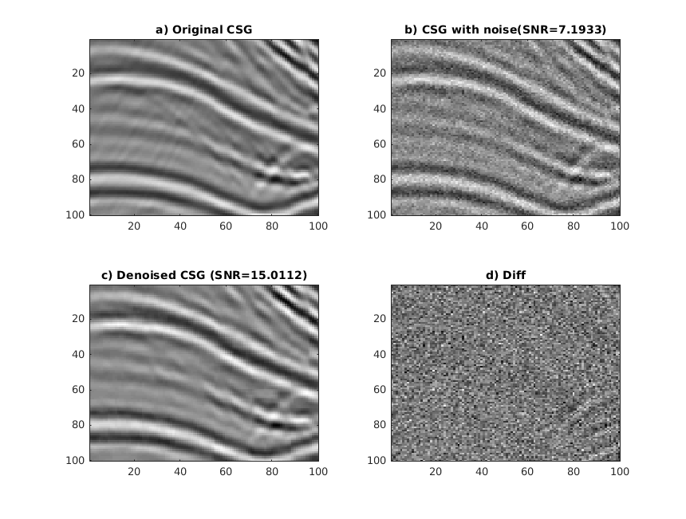 |
| Figure 1: Training phase |
Figure 2: Denoising phase |
To learn how to use convolutional sparse coding to attenuate the noise in seismic data.
Please read the SEG Beijing abstract and PPT for theory of seismic
denoising.
MATLAB
The convolutional sparse coding (CSC) problem can be defined as finding
the optimal
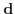
and
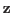
that minimize the following objective function:
where
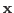
is an 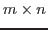
image in vector form,
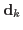
refers to the 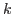
-th
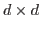
filter in vector form,
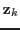
is vector of
sparse coefficients with size
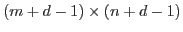
,
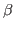
controls
the 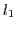
penalty, and 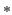
denotes the 2D convolution operator.
The noise attenuation method by CSC can be divided into the
training phase and the denoising phase. The seismic data
with a relatively high signal-to-noise ratio are chosen for
training to get the learned basis functions. Then we use all
(or a subset) of the basis functions to attenuate the random
or coherent noise in the seismic data.
- Download the codes and unzip it.
- Change your Matlab working directory.
- Type "training_phase" to do the training phase. The learned filters will be saved as "filters.mat".
The result is shown in
Figure 1.
- Type "denoise" to do the denoise phase. It will load "filters.mat" and do denoising.
The result is shown in
Figure 2.
- Play with the parameters: a) the size and the number of the filter in the training phase, b) the coefficient of l1 norm in the denoising phase
to see how the denoising results are going to change.
- Compare the filters of CSC to those of the first layer of CNN. What's the similarity and difference between them?
Zhaolun Liu
2018-10-29